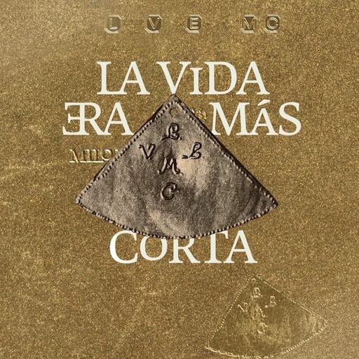
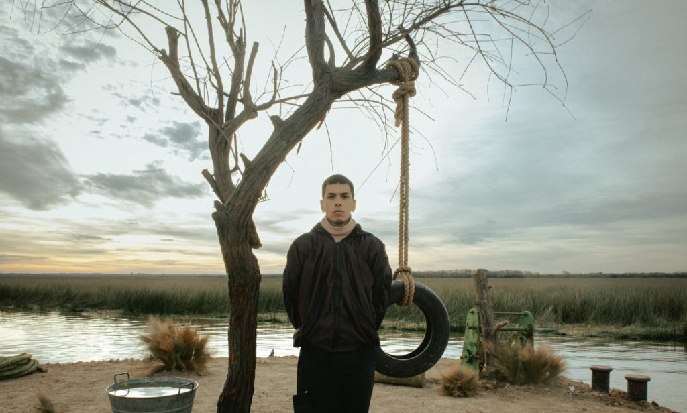
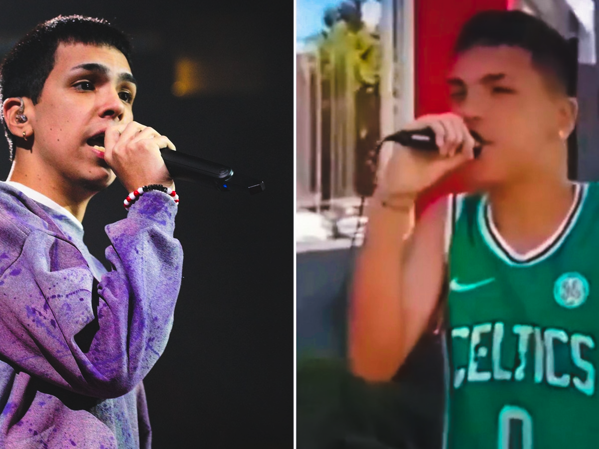

Camilo Joaquín Villarruel, más conocido como Milo J, logró la consagración desde que decidió hacer un giro musical en su carrera: del trap al folklore latinoamericano. Como consecuencia, nació su disco La vida era más corta, que terminó por consolidarlo como un artista de renombre a tan solo 19 años. En la presente página web, se abordará su recorrido artístico, su impacto cultural en futuras generaciones y un análisis sobre su último disco.
Sus comienzos, desde Morón al mundo
Milo J nació y creció en Morón, oeste de la provincia de Buenos Aires. Gracias a la influencia de su hermana mayor, comenzó a subir sus primeras canciones a plataformas digitales siendo apenas un adolescente de 14 años. Milo J reconoce que en sus inicios no tenía nada definido en cuanto a sus gustos, ya que eran bastante variados. Su estilo inicial, marcado por el trap, le permitió ganar un público joven hasta infantil que lo siguió de cerca en cada lanzamiento. Entre sus influencias se encuentran artistas como Kendrick Lamar, Charly García,Pescado Rabioso y Serú Girán, entre otros. Milo J, en lo musical, fue bastante precoz, a sus 8 años comenzo a escribir sus primeras rimas, a los 13 entro por primera vez a un estudio de grabacion, a los 15 obtuvo su primer hit viral, al año siguiente grabo un EP junto a Bizarrap. Camilo comenzÓ su carrera musical en las competencias de freestyle que se realizaban en diferentes plazas, de hecho en un video aparece junto a tambien famoso Wos. Sus allegados contaban con pocos recursos, compartian una tarjeta SUBE para toda la familia, no tenian contactos con productoras, lo que se llama empezar de cero.
La dificultad en lo economico se pudo resolver con el tiempo ya que Milo J uso las regalias de sus primeras canciones para empujar el proyecto, más el aguinaldo de dos pibes que integran el Bajo West su otra "familia" productora, compraron un microfono y una placa de sonido y asi , pudieron grabar "1708" , que es el codigo postal de Morón, finalmente obtuvo mas de 3 millones de reproduciones en Youtube. Milo J tuvo su primera salida oficial al mundo de la musica con su tema " Tus vueltas" , allá por el año 2021. Ese año fue el comienzo de gran cantidad de videos y canciones. Le continuaron varias colaboraciones entre las que se destaca la de Bizarrap. Pero fue la cancion " Milagrosa" la cual que le abrio todas las puertas, entre sus lineas dice " loco que tiene un sueño, la vida nos dio poco". Gracias a la plataforma digital de videos Tik Tok, la cancion se hiper viralizó, y de hecho los niños han hecho uso de su cara para memes y stickers, y es aqui donde sentó las bases de su fandom. Ésto llegó a los oidos de Duki Y el antes mencionado Bizarrap, quien lo eligió para ser parte de Bzrp Session 57, lanzada en octubre del 2023, es un EP llamado "En dormir sin Madrid", compuesto por cinco canciones, entre las más conocidas " No soy eterno", " Fruto", "Toy en el mic". El año 2023 tuvo sus conflictos, Camilo aun seguia en la secundaria pero por las exigencias laborales y mucho tiempo fuera de la escuela , obligo a Milo a dejarla y es un tema que aun sigue pendiente. A pesar de los millones de visualizaciones de sus videos y reproducciones, sobre todo con su cancion "Rara vez" , no se salvo de conflictos con su ex productor, ya que estuvo mucho tiempo sin poder cobrar las regalias, toda esa frustacion termino en varias canciones , entre ellas " Al borde" , precisamente en una frase que afirma" entre cabidas y sellos , no se si soy feliz", el cantante en su momento dudaba en continuar con la musica. Luego de este percance , Camilo firmo con la productora Dale Play alla por el 2023, y en conjunto con sus dos familias, su madre y hermanos y amigos de Bajo West, lugar donde él encuentra su lugar en el mundo a la hora de componer y producir sus canciones,conforman un grupo del tipo coraza , el cual esta siempre atento a quien se quiere arrimar, no quieren saber nada con estar bajo problemas otra vez. Despues de todo sigue siendo un adolescente,casi joven;y bien se conoce que la industria musical suele ser una picadora de carne, sobre todo si el protagonista son menores. En el momento del lanzamiento del disco "111", Milo ya mostraba sus gustos por el folklore argentino ,la antesala a La Vida era mas corta, codeandose con artistas del rubro como Soledad, y rescatando fragmentos de Facundo Cabbral y Horacio Guaraní en sus conciertos y canciones. En su sala de produccion escucha a la familia Carabajal. De hecho, tiempo despues, salio en un una edicion de ¡Fa! de Mex Urtizberea, llamado ¡Falklore!, luego se retomara sobre esto. Volviendo al vinilo "111", entre sus canciones la que mas descataca es "M.A.I.", una hermosa melodia con una letra muy sentida de amor, lo que sigue es un fragmento de la misma en su primer gran concierto justamente en el dia de su cumpleaños en el Estadio de Morón. Hay que descatacar que en este disco hubo colaboraciones con Nicki Nicole y Peso Pluma. El concepto de este este disco esta basado en el desahogo personal de desamores, y su propia vulnerabilidad ante situaciones no tan agradables de la industria musical. Es cuanto al estilo musical , dista mucho del mundo trap que caracterizaba los comienzos de Milo J.
Camilo desde el 2023 que no ha parado de dar conciertos, entre los que mas se destacan se encuentran Cosquin Rock, Festival de Peñas de Villa Maria, Primavera Sound, tambien giras por Europa, America Latina y America del Norte. Corria el año 2024, el mismo trajo otro disco de estudio llamado "166", ese numero no es un numero cualquiera, es el colectivo que lleva a Morón desde Palermo, ubicado en CABA, detalle no menor, era el recorrido que hacia el cantante hasta el estudio desde su hogar natal. Fue una busqueda de independencia economica mientras iba golpeando puertas. Este album significo un parate en su acelerada agenda de eventos. Todo iba muy rapido, y a veces puede ser la caida igual de rapida. El mismo abre con grabaciones que ha hecho de niño, es una reinvidicacion a sus dos familias y su libertad. Musicalmente, es un disco de puro trap, un recordatorio de sus origenes y sobre todo, antes de sus 20 años. El lanzamiento fue toda una perfomance: un colectivo con el mismo numero lleno de fans y periodistas donde pudieron disfrutar de las nuevas canciones. Es un homenaje su barrio , el cual lo vio crecer, la esencia del oeste bonaerense. La obra esta conformada por 12 films, todos conectados , son un reflejo de Milo J y Camilo en su conjunto. Es un disco maduro, y evolucionado, el cantante no le tuvo miedo a arriesgarse a probar nuevos sonidos y letras mas complejas. A continuación "166"
Luego de la premier del disco, Milo J actuo en el Estadio de Morón. Y llegamos al 2025, a dos meses de empezar el año, el artista saco el album 166(Deluxe)Retirada, compuesta por 20 canciones, el mismo es una expansión del anterior disco "166",con colaboraciones de Tini,Bhavi y Munic HB, aca Milo diversifica aún más sus estilos yda una antesala a lo que iba a ser su trabajo discográfico siguiente, en la cancion "Daña(Elvira)" al final, hay una estrofa que dice: "Me aburrrí de hacer trap, negro quiero hacer folklore. Soy amigo de los primos Carabajal, de la Sole". Otro detalle es que Camilo usa fragmentos de otras canciones por ejemplo "Tortura" de Shakira, en la mencionada Daña(Elvira), hay una fusion del sampleo de "Post crucifixión" de Pescado Rabioso con una parte de "Elvira" de Neo, y hay mucho más. Fue presentado en varios Movistar Arena en Buenos Aires, fue un indicio del cierre del artista con el mundo trap, y el comienzo de un nuevo ciclo. Esto se dio despues de una cancelacion en el ex ESMA (centro de detencion durante ultimo proceso militar), donde Milo tenía previsto una actuación y reencuentro con sus fans luego de un año de mucha actividad. Iba a ser un show gratuito, pero fue suspendido por las autoridades, porque segun ellos no habia garantia de seguridad. En el lado opuesto, denunciaron una censura politica. Más alla de Milo J, está Camilo , una persona con conciencia de los derechos humanos y sociales, es un tema sensible ya que le toca de cerca, a su abuela biologica nunca conoció, fue víctima de terrorismo de Estado de la última dictadura militar en el país. Milo usa sus canciones para no perder jamas la memoria constante, y la que tiene que perdurar. Al mismo tiempo que se sucedian los Movistar Arena en junio del 2025 (cabe mencionar que en este mismo espacio, hubo anticipo de lo que iba a ser el ultimo trabajo discografico), Milo J participo de Falklore anteriomente mencionado, un disco de Mex Urtizberea, en el cual se fusionan artistas del folklore y del trap, y es un homenaje a la música argentina. En el mismo, Milo J interpreta la cancion "La pucha con el hombre" de los Carabajal. Ya estaba todo dicho, la salida del trap era oficial. MIlo j en un año saco dos discos, y comenzaba una gira que lo llevaria a recorrer el mundo.
Milo J, tiene dos familias: por un lado su mama y hermanos, y por otro lado, su equipo artistico Bajo West, ambas partes lo acompañan desde sus principios, convirtiendose en un gran sosten para el cantante
Resumidamente, se puede decir en pocas líneas que desde sus primeros años comenzó a destacarse por sus letras y sus rimas que le salían naturalmente. Empezó desde muy abajo, sin recursos ni contactos, con el tiempo y mucha preseverancia fue ganando terreno y respeto de sus pares y de la industria musical. Sin olvidar también por su manera particular de interpretar sus canciones, y cantarlas con voz grave y profunda. Poco a poco, sus temas comenzaron a alcanzar millones de reproducciones y su nombre empezó a ser reconocido dentro de la escena urbana argentina hasta llegar lo que es hoy en dia. Es de desatacar el fandom que se armo desde las plataformas digitales, las edades van desde muy niños hasta nuevos oyentes de la tercera generación.
Antes de alcanzar reconocimiento internacional, Milo J publicó diferentes canciones y colaboraciones que le permitieron construir una comunidad de seguidores muy fieles a su carrera , los cuales lo siguen muy de cerca. No solamente hay de su país natal sino tambien de otros lugares de latinoamerica, tambien Europa y Estados Unidos. Los fans lo describen como alba, genio, refugio , madurez, compañia, magia, y muchas otras palabras que reflejan la importancia de su música en sus vidas. En sus recitales suelen darse demostraciones de cariño hacia el artista mediante juego de luces, carteles y banderas. La relación entre Milo J y su público es muy cercana, y se evidencia en la manera en que el artista interactúa con sus seguidores a través de redes sociales y en sus presentaciones en vivo. Cada vez que Milo J lanza una nueva canción, los fans en sus redes tienen un latiguillo que dice:"Ya me la se, saca otra", y es un reflejo de la anticipación y entusiasmo que genera su música.
La evolución musical: hacia nuevos rumbos.
Con el correr de los años, el artista decidió sumar elementos del folklore argentino a su música, como así también otros estilos latinoamericanos, fusionando géneros urbanos con sonidos tradicionales. Este cambio generó diferentes opiniones entre el público y la crítica. También produjo interés por la manera en que un artista joven incorporó elementos de la música tradicional argentina. Como bien se dijo más arriba, genero apoyo y controversia, ya que muchos de los viejos folkloristas sostenian que lo que hizo Milo J en su disco La vida era mas corta no era foklore, o simplemente que el trap y el folklore no se podian mezclar. Pero la mayoria de los jovenes y nuevos oyentes, lo vieron como una propuesta innovadora y fresca, que acercaba a las nuevas generaciones a la musica tradicional argentina. Y esto último fue un punto muy positivo. El album fue un éxito de ventas y de reproducciones, y le permitió al artista consolidarse como un referente de la música urbana y del folklore argentino. Consiguió nuevos seguidores y que sus antiguos fans los más jovenes se interesen en el este rubro musical, y que a su vez se apropien del mismo. La propuesta de Milo J fue un ejemplo de cómo los artistas pueden evolucionar y explorar nuevos estilos sin perder su esencia.
La vida era más corta, el disco que marcó un antes y un después
El último trabajo discográfico de Milo J fue una apuesta muy fuerte para el artista, en el cual evidencia un giro importante en cuanto a sus estilos musicales. En este proyecto aparecen sonidos inmersos en las raíces musicales argentinas y una propuesta diferente a sus primeros trabajos. No solamente mostró cambios en el estilo, sino también en lo que representan sus letras, marcando la identidad latinoamericana. Este trabajo de acuerdo a medios especializados, es un disco que refleja la madurez del artista y su capacidad de reinventarse. "La vida era más corta" fue un disco que marcó un antes y un después en la carrera de Milo J, consolidándolo como un artista versátil y con una propuesta musical innovadora. A su vez , es su trabajo más conceptual, ya que cada canción tiene un mensaje y una historia que contar, y en conjunto forman un relato que refleja su visión del mundo y las experiencias por las que se sintio interpelado en su vida. La portada del disco es un reflejo de la identidad del artista, y representa su conexión con la música tradicional argentina y su compromiso con la cultura latinoamericana. El disco explora la nostalgia de lo que implica el crecimiento, entre los que se cuentan los duelos personales, la canción "Luciernagas" es un ejemplo de ello, es un trabajo en colaboración con Silvio Rodríguez, quien casi nunca hace este tipo de colaboraciones, pero con Milo hizo la excepción. En cuanto a los estilos musicales elegidos, se destacan la milonga, chacareras, y murgas , aparecen también sampleos de Mercedes Sosa en " Jangadero", Violeta Parra y Jaime Ross. Para Milo, el género del folklore es más que un simple genero musical, es una forma de vida, y un reflejo de la identidad cultural de su país. Para él, es filosofia. Esto no viene de la nada, Milo hizo un recorrido musical y su propio trabajo de campo en Santiago del Estero,donde tiene familiares y amigos como lo es el Cuti Carabajal. Toda la experiencia vivida en la provincia, como participación en festivales, comunidades, le dio años de vida, confiesa Milo, y algo que jamás había experimentado, de hecho sintió que volvió a sus orígenes, lo hizo sentise argentino. El productor Tatool tuvo mucho que ver en el nacimiento del disco, ya que fue el quien tiró la idea de incursionar en el mundo del folklore con guitarras criollas, murgas y bombos. Un año y medio le tomó a Camilo hacer el trabajo arduo de completar el disco. Junto a uno de los mejores multiinstrumentistas de Argentina, Santiago Alvarado y su productor de confianza, iba creciendo desde cero uno de los mejores 100 discos del 2025 segun la Rolling Stone norteamericana, entre melodias improvisadas, letras profundas escritas desde el pesimismo y la nostalgia. Un trabajo discográfico totalmente conceptual, colectivo, hecho desde una narrativa no lineal de testimonios de personajes que viven en una constante transformación, con sueños, recuerdos y fantasías. Es un morir, vivir y renacer. Es un rito de paso en el cual el personaje o los personajes mutan desde el dolor y la angustia hacia un florecer. A su vez , trabaja desde la memoria colectiva , mediante canciones como "Jangadero" ( con un extracto de la Mecha Sosa), donde realiza un ejercicio constante de transmisión cultural transgeneracional. Representa un reencuentro con nuestras identidades y las raíces musicales argentinas, es un abrazo a nuestra cultura milenaria. La vida era más corta "es una carta de amor sincrética de la cultura argentina" (Rolling Stone USA, 2025), y bien que es cierto. El album, como se dijo, es sobre raices folklóricas argentinas-como territorio- pero manifestadas en canciones mediante recursos y modo de producción del trap y la música urbana, es decir samples, beats, loops, sinte, y es aquí donde radica la madurez artística en la carrera de Milo J. Es una travesía por territorios folklóricos que funcionan como puntos de referencia o lugares de tránsito, pero no se trata de visibilizar un estilo de música que está fuera de circulación, ya que el foklore es un lenguaje en constante movimiento y Milo es un artista recepetivo, y como sujeto histórico, viene con un bagaje de historias, memorias, experiencias y que se posiciona tambien como un heredero cultural. El resultado de ese viaje de autodescubrimiento de su propio mundo privado que luego decidió compartirlo, fue este disco, el cual interpela a sus oyentes, los invita a un recorrido a un espacio atemporal y dinámico, cargado de sensibilidades, en constante diálogo con la actualidad. El color elegido para la presentación no fue casualidad, es el marrón: representa la tierra y el polvo, entra en contraste con el celeste de la bandera argentina, ambos colores atraviesan todo el arte del disco. En una de sus declaraciones, Milo se posiciona como un sujeto "marrón",como también lo es el disco y latinoamérica, y que funciona como el eje conceptual del album: Milo se reapropia culturalmente, reconfigura el "ser marrón" , de ser una frase ofensiva a una que no tenga esa cualidad, más bien una que tenga de sentido de pertenencia legítima. Existe una visibilización del mestizaje y la identidad, se deconstruye el lema de "Argentina blanca y eurocentrista" por una Argentina cuyos origenes están enraizados en el mestizaje y en lo marrón. La vida era más corta no se queda catalogado en un solo género, es un híbrido que se caracteriza por su autenticidad, tanto en lo visual como en lo musical. Lo de Milo J es una reinvención , donde toma sus origenes y los pone en diálogo con un sintetizador y con su voz, lo manifiesta desde su presente.

Video de "Cuando el agua hirviendo", suena con un ukelele de fondo, con una letra dedicada a que no todo está perdido,a la esperanza, al dolor y al renacer. Hay una interpolación del clásico "Tres golpes" de Totó la Mamposina, el resultado es un contraste entre una melodía alegre y una letra melancolica.
La incorporación de instrumentos, ritmos y elementos relacionados con la música argentina permitió que Milo J explorase una identidad musical diferente a la de sus primeros trabajos. De esta manera, su propuesta combinó elementos de la música urbana con sonidos tradicionales.
Impacto y repercusiones de LVEMC
El éxito de La vida era más corta traspasó los límites argentinos, generando efectos asombrosos en diversos países de Latinoamérica, incluso en España y Estados Unidos, entre otros. El disco fue presentado para finales del 2025 en dos Estadios Vélez en Buenos Aires, un éxito rotundo. Obtuvo buenas califaciones entres los espcialistas, incluso entre la prensa extranjera,generando un respeto de parte de todos. Lo que vino después fue arrollador hasta el día de la finalización de esta publicación para el artista. El 2026 comenzó una seguidilla de presentaciones, entre las que se cuentan con el Festival de la canción de Viña del Mar en Chile donde conquistó al "monstruo" de la Quinta Vergara, luego cerró el Festival Nacional de Cosquín, agotando la capacidad de entradas. En abril , fue convocado para realizar una actuación de 15 minutos en el famoso Tiny Desk en Washington DC contando con la compañía de Agarrate Catalina, la murga más popular de Uruguay, Milo rindió homenaje a sus orígenes y el reencuentro con su identidad;obtuvo mas de 15 millones de reproducciones en la plataforma YouTube. En la Ciudad de México cantó en el Palacio de los Deportes, otra vez agotando las entradas, el escenario fue de 360 grados, la óptica fue totalmente inclusiva, la mirada hacia el escenario fue igual para todos los concurrentes. Previamente llegó hasta España donde realizó numerosas presentaciones. En mayo de regreso al país , actuó en los Premios Gardeles, y fue el máximo ganador llevándose un total de 12 estatuillas, incluyendo el Gardel de oro. En julio, hizo su debut en el SummerStage de Central Park en la ciudad de Nueva York como así también en el festival de Rock in Rio y otros eventos en San Pablo.En Europa realizó una suerte de unplugged en Milán y otro en Londres, superando las barreras idiomáticas, hizo lo mismo en Los Ángeles, California. En agosto, dio una conferencia de prensa con el Estadio del Kempes de fonde, anunciando el cierre de la gira el 5 de diciembre en la Ciudad de Córdoba, Argentina. La decisión de hacerlo en el centro del país fue para que todos tuvieran la oportunidad de llegarse y de que Milo tenga un mayor acercamiento con sus fans, el escenario es de 360 grados al igual que en México. Y no para ahí, hace poco fueron anunciados las nominaciones a los premios Grammys Latinos, logrando 7 candidaturas, incluyendo Albúm del año; se convirtió en el artista más joven en la historia en ser nominado en esta última terna. En octubre, estrenó en el país "La Jangada", un bello poema visual, en varios cines en diversos países. Grabado sobre una barcaza, simulando un patio santiagueño con piso de tierra y un ranchito, un neumático colgado de un árbol y un pescador. Sobre la misma estaba la selección nacional de Folklore y el trap: Soledad, Raly Barrionuevo, Trueno, Mon Laferte, Lazaro Caballero, Agarrate Catalina, la promesa Radamel, Cuti y Roberto Carabajal, Tano Romano. En conjunto, celebraron el aniversario de LVEMC, como producto final fue una producción audiovisual con pocos procedentes en la música latinamericana. Próximamente se vienen recitales en Centroamerica para seguir presentando su disco.

Su propuesta generó un debate sobre la unión de géneros y posicionó al folklore como una fuente de inspiración para nuevas generaciones de artistas urbanos. A su vez, ha sumado nuevos seguidores, incluyendo un público adulto. En sus primeras presentaciones aparecio en el comienzo un video con una frase de Facundo Cabral: " No te escapes con la idea del mañana, porque la vida es aquí y ahora mismo. Con tu sufrimiento de hoy estás alimentando tu miedo de mañana, pero no tienes escapatoria, el amor, que es valentía, te rodea. Deja los caprichosos y grises códigos de lado porque la única escritura está en la existencia, que es arte, es decir la verdadera religión, porque la vida ante todo es un hecho estético, belleza que nos lleva a construir",filosofía que el mismo Milo se apropia para su propia vida musical.
La importancia de mezclar géneros
La combinación entre música urbana y sonidos tradicionales demuestra que diferentes generaciones y estilos musicales pueden encontrarse en una misma propuesta artística. Esta mezcla también permite que las nuevas generaciones conozcan y se acerquen al folklore argentino. Con apenas 19 años, Milo J ha construído una carrea sólida que ya no entra más en la figura " promesa en asenso", sino una voz que permanece en el tiempo imfluyendo en las próximas generaciones.
La mezcla de géneros también muestra cómo los artistas contemporáneos pueden recuperar elementos de la cultura musical argentina y adaptarlos a nuevas formas de expresión. Este tipo de propuestas puede contribuir a acercar distintos públicos y generaciones.
Galería de imágenes de recitales

Cantando por una hamburguesa
Registro de su primera presentación
Música de Milo J
Si querés conocer más sobre la música de Milo J, podés escuchar algunos de sus trabajos y visitar sus plataformas oficiales.
111
El primer disco de Milo J, con su estilo trap original.
EscucharBiografía
Conocé la trayectoria completa del artista.
Ver másSpotify
Escuchá toda su discografía en la plataforma.
Ir a Spotify